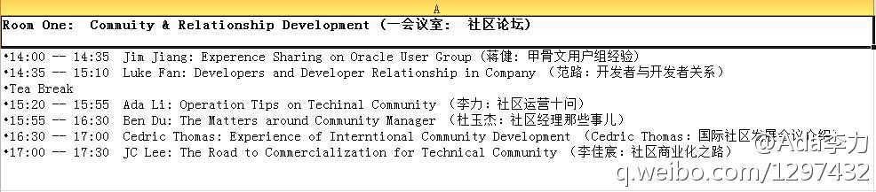

2012年10月27日周六，成都的云计算领域活动，地点：成都翼起来创业咖啡厅@程辉:#OpenStack中国行# 成都站开始报名网页链接 ，这次我们请到了RedHat Libvirt贡献者介绍libvirt API和架构；OpenStack存储组件NexentaStor与OpenStack的整合和部署；新浪OpenStack团队杨雨介绍Swift架构和最新进展；Canonical的Juju；开放实验室StackLab部署，以及StackLab企业接入计划。
2012年10月27日（周六）同一天成都有两张技术活动呢，一场是移动互联领域，地点在软件园 @CMDN炫姐姐 有时间看看么？；一场是云计算领域，OpenStack中国行，地点在翼起来创业咖啡厅，我和@Adela可爱多 会在现场。---:抱歉，此微博已被作者删除。查看帮助： 网页链接
思科的WebEx.com ，对新账号有个免费试用期。展示互动 gensee.com 也可以提供网上直播。@特价萝卜:#Clojure中文技术聚会# 很多Clojure爱好者多次询问是否可以直播会议，但是我没有这方面的经验，所以想向各位取取经，望传授一二。@庄表伟 @Ada李力 @ZoomQuiet @ben_杜玉杰 cc @美味书签-dennis
@刘江总编 说：“要是没有移动大会，我是挺想去看看的。其实写作是一种思维训练，所有技术人员都应该具备的技能。之前也有很多资深人士谈过面试中可以考察写作能力的。” 我们已经给CSDN的博客专家发了活动信息，邀请他们参加。@高志军_PKU:“技术传播与技术写作”沙龙将于10月20日在北京大学举行，软件与微电子学院的通知如下：网页链接。目前已有Symantec，EMC，华为，Kudos，MapABC，高德软件，创思智汇，文思海辉等十几家单位的同仁报名参加。网络参与平台正在调试中，外地的朋友或许也可远程参与，欢迎大家关注。
很多人说过写作能力对技术人员的重要性，但我们还是要经常大声吆喝，让更多人知道。//@杭州李云:《该死的“代码就是文档”》的CSDN的链接在这 网页链接。@高志军_PKU:“技术传播与技术写作”沙龙将于10月20日在北京大学举行，软件与微电子学院的通知如下：网页链接。目前已有Symantec，EMC，华为，Kudos，MapABC，高德软件，创思智汇，文思海辉等十几家单位的同仁报名参加。网络参与平台正在调试中，外地的朋友或许也可远程参与，欢迎大家关注。
开源周社区日的“社区发展论坛”的日程议题已确定 网页链接 ：@家常咖啡 甲骨文用户组经验；@LukeFan 开发者与开发者关系; @Ada李力 社区运营十问；@ben_杜玉杰 社区经理那些事儿; Cedric Thomas：国际社区发展会议介绍; @李佳宸-开发者社区联盟 社区商业化之路； 
我的演讲稿已上传到微盘，网页链接 这十个社区运营问题，我一直在寻找答案，这个周六会尝试谈谈自己的看法，希望听听更有经验者指点：@蒋涛CSDN @CSDN范凯 @弓长女爰@Ada李力:开源周社区日的“社区发展论坛”的日程议题已确定 网页链接 ：@家常咖啡 甲骨文用户组经验；@LukeFan 开发者与开发者关系; @Ada李力 社区运营十问；@ben_杜玉杰 社区经理那些事儿; Cedric Thomas：国际社区发展会议介绍; @李佳宸-开发者社区联盟 社区商业化之路；
每次大会，大家都很忙很忙滴。@李涛TonyLi:#MDCC 2012# 18日 TOP30+ Dinner，实名邀请；19日 全体大会，"工场之夜“创业者沙龙，创业俱乐部-非程勿扰，创新应用大赛&创新应用展；20日 8大主题论坛，欢网专场，OMIA专场，总裁研讨会，中国好项目，创新应用大赛&创新应用展。合理安排时间，注意保暖。网页链接
 网页链接 ，这次我们请到了RedHat Libvirt贡献者介绍libvirt API和架构；OpenStack存储组件NexentaStor与OpenStack的整合和部署；新浪OpenStack团队杨雨介绍Swift架构和最新进展；Canonical的Juju；开放实验室StackLab部署，以及StackLab企业接入计划。
网页链接 ，这次我们请到了RedHat Libvirt贡献者介绍libvirt API和架构；OpenStack存储组件NexentaStor与OpenStack的整合和部署；新浪OpenStack团队杨雨介绍Swift架构和最新进展；Canonical的Juju；开放实验室StackLab部署，以及StackLab企业接入计划。